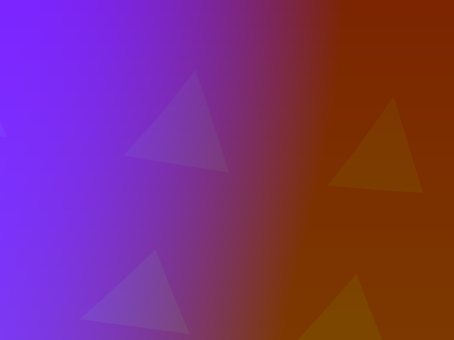
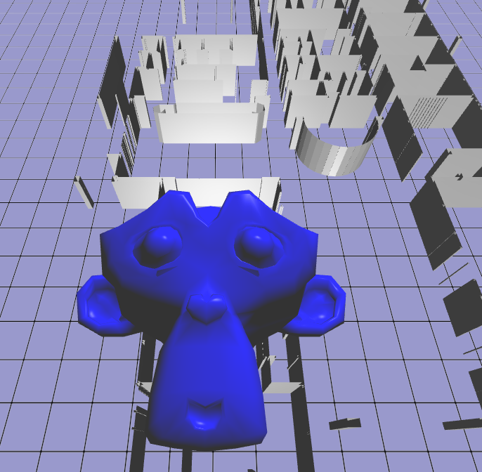
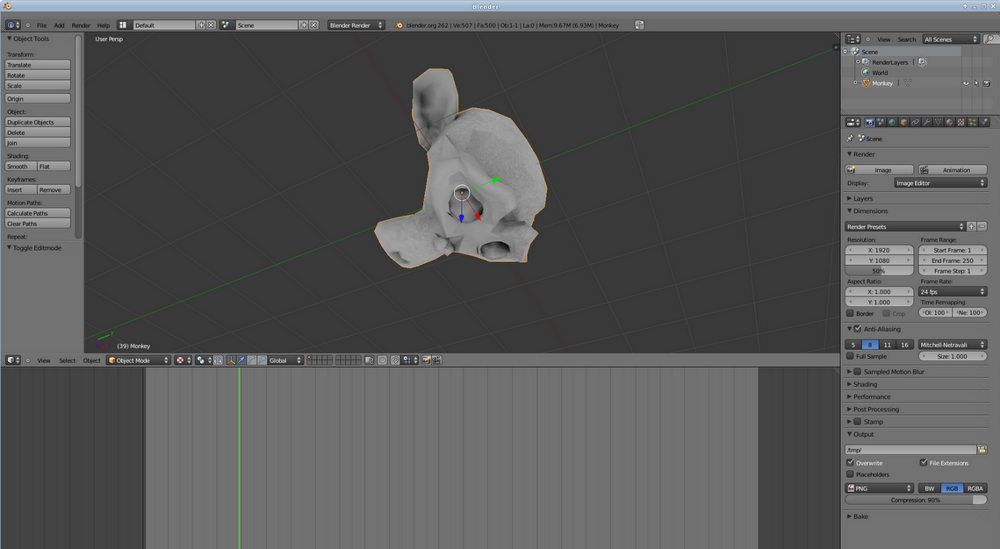

I've spent a lot of time experimenting with deferred shading techniques. The idea here is that, in scenes where you have lots of overlapping fragments (e.g. walls) in shot, then you can "defer" all of the variables that you use for calculating fragment shader effects (like lighting) into a series of textures, instead of doing the calculations. Depth testing will sort these so only the front-most fragments' variables remain (hidden surfaces lose all their variables and therefore no effects calculation time is wasted on them).
Very fiddly to set up in GL, because you need to get all of the identifying integers for your many texture slots, texture locations, texture indices, frame buffers, frame buffer attachments, and all the usual bits, around the right way without mixing them up.
Anyway, I got it working in several demos - played around with texturing and lighting, and all the usual effects. Unfortunately texture sampling doesn't lend itself to being deferred (because the deferred step will try and texture the background as well and end up making an aliased, colourful, but mostly correct, mess). I made some not exactly scientific benchmarks:
| n | Forward-Shading | Deferred-Shading | D/F Factor |
| 1 | 3000 fps | 1000 fps | 1/3 |
| 1000 | 90 fps | 30 fps | 1/3 |
So, on my machine, I got 3000 fps rendering a single instance of a mesh with regular (forward) shading. Using instancing to render a scene with 1000 instances in the exact same spot I got 90 fps. In both cases the deferred shading technique cut my rendering speed down to 1/3. Now, I wasn't doing any deferred techniques here, like lighting, so in this case we can expect the forward-shading fps to decrease linearly as the number of effects are added, but the deferred shading model shouldn't decrease much at all.
I think it gives me a good guess that deferred shading is worth using only when my deferrable rendering effects are slowing me down to significantly less than 1/3 of my no-effects shading frequency.
In this case, I suspect that it's probably not going to be terribly useful for our WebGL building visualisation, which doesn't need any fancy effects or multiple light sources. I suspect that this might
I also took some time to tick off another "TODO some day" technique - post processing effects. Basically you render everything to a texture instead of the screen, then play with the texture using computer vision techniques or filters or anything else that you want to draw over the top. Your modified texture goes onto a quad projected right up against the screen. Again, fiddly to set up in GL, but easy to do as you can access and play with all the bits and pieces in the fragment shader very easily. While I was playing with buffer access, I wrote a little helper function to take proper screen captures by reading each pixel from a frame buffer and writing unsigned RGB bytebytebyte to an image file. I used ImageMagick to auto-convert these to PNGs. Below is a capture of my post processing "press all the buttons" effect - the "Hello Triangle" demo turned into several swirling colour-phasing wobbly triangles:
I'm not really sure where these effects are going to be useful yet, except for making fancy transitions between scenes, or effects in games.
Someone spotted a mistake in my Phong tutorial - now I have proper Blinn-Phong! The Specular exponent needed to be x2 to go from Phong to Blinn. The monkey is my stand-in model for the moment.
I also ported my JavaScript maths library to C. Frankly, it's faster and simpler than the most popular GL maths library. It's written in C which means no disgusting template programming. I might try throwing some inlines at it and see if that makes it more-so. I'll upload it somewhere...
I also had a go at baking ambient occlusion maps in Blender. These are textures that you can use as the ambient coefficient in your Phong algorithm. They make the holes and closed-in bits darker, and the big, open surfaces bright. Only useful for static meshes. Really easy to do when you find the button in Blender. I found my ambient coefficients tended to give washed-out (greyish) look to the scene, so they might need to be multiplied by the regular texture map as well.
